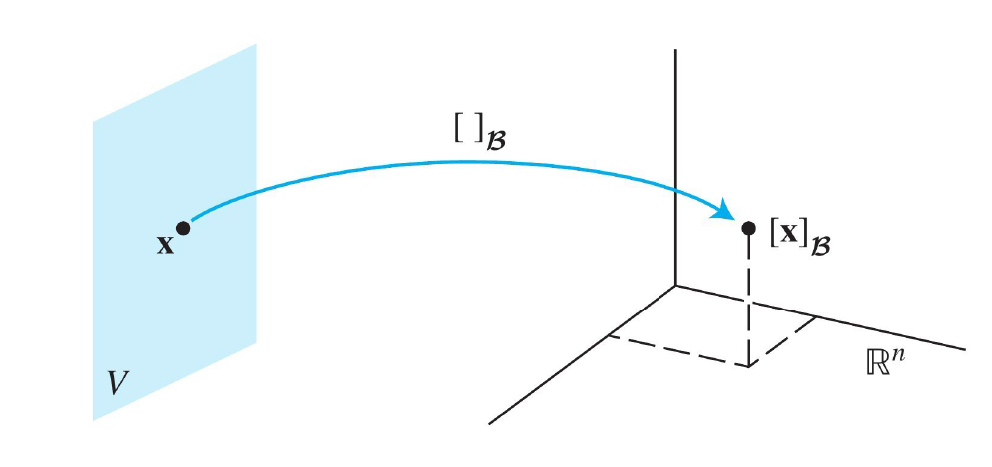
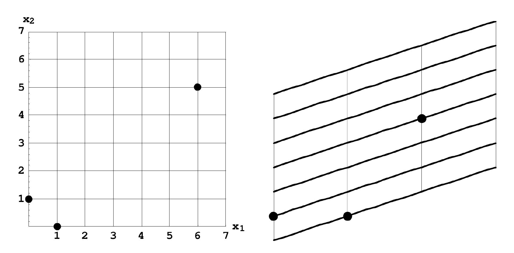

## Heading
Some *embedded* Markdown which `md-block` can convert for you!
| Column 1 | Column 2 | Column 3 |
|----------|----------|----------|
| Row 1 | Data 1 | Data 2 |
| Row 2 | Data 3 | Data 4 |
| Row 3 | Data 5 | Data 6 |
# Heading 1
---
import numpy as np
import matplotlib.pyplot as plt
x = np.linspace(-3, 3, 400)
y = (x**2 - 1) / (x - 1)
y[np.isclose(x, 1)]
---
## Heading 2
### Heading 3
# Heading 1
## Heading 2
### Heading 3
# Your Jupyter code here
import numpy as np
import matplotlib.pyplot as plt
plt.plot([1, 2, 3], [1, 4, 9])
plt.show()
Plot a Function in HTML
(បម្លែងលីនេអ៊ែរ)
Let $V, W$ be vector spaces. A function $\varphi: V \longrightarrow W$ is a linear transformation if
$\varphi(v+w)=\varphi(v)+\varphi(w)$ for all $v, w \in V$,
$\varphi(\alpha v)=\alpha \varphi(v)$ for all $\alpha \in \mathbb{R}$ and $v \in V$.
For example, the function $\varphi: \mathbb{R}^3 \longrightarrow \mathbb{R}^2$ defined by $$\varphi\left(\left(x_1, x_2, x_3\right)\right)=\left(x_1+2 x_2-x_3, x_2+x_3\right)$$ is a linear transformation. Why?
The rank of a $A(m\times n)$ is the dimension of its row space or its column space, written
$$
\operatorname{rank}(A) = \operatorname{dim} \mathrm{Row}(A) = \operatorname{dim} \mathrm{Col}(A)
$$
The nullity of a $A$ is the dimension of the kernel (null space) of $A$, written
$$
\operatorname{nullity}(A) = \operatorname{dim} \operatorname{Null}(A)
$$
ទ្រឹស្ដីបទ 5. : (Dimension formula)
Let $A(m\times n)$ be a matrix in $\mathcal{M}_{m\times n}(\mathbb R)$. Then:
\begin{eqnarray*}
n = \dim \mathbb R^n &=& \dim \mathrm{Null}(A) + \operatorname{dim} \mathrm{Row}(A)\\
&=& \mathrm{nullity}(A) + \mathrm{rank}(A)
\end{eqnarray*}
សម្រាយបញ្ជាក់.↩
សម្រាយបញ្ជាក់.
Row-reduce \( A \) to its row echelon form.
Perform row operations on \( A \) to transform it into its row echelon form \( R \), which has the same row space as \( A \). Let the number of non-zero rows in \( R \) be \( r \). This \( r \) is the rank of \( A \), because the row vectors in \( R \) form a basis for \( \text{Row}(A) \).
Thus:
\[
\dim(\text{Row}(A)) = r, \quad \text{where } r \text{ is the rank of } A.
\]
Basis for \( \mathbb{R}^n \).
The matrix \( A \) acts on vectors in \( \mathbb{R}^n \). For each solution \( \mathbf{x} \in \mathbb{R}^n \) to \( A\mathbf{x} = 0 \), the components of \( \mathbf{x} \) can be described in terms of free variables corresponding to the columns of \( A \) that are not pivot columns (i.e., the dependent variables are determined by the pivot structure). Let the number of free variables be \( d \), where \( d \) equals the number of non-pivot columns in \( A \). Then:
\[
\dim(\text{Null}(A)) = d, \quad \text{where } d \text{ is the nullity of } A.
\]
Relationship between rank and nullity.
The rank \( r \) and nullity \( d \) of \( A \) account for all \( n \) columns of \( A \). Specifically:
- \( r \), the number of pivot columns, corresponds to the dimension of \( \text{Row}(A) \).
- \( d \), the number of non-pivot columns, corresponds to the dimension of \( \text{Null}(A) \).
Hence:
\[
n = r + d.
\]
Substituting the definitions of \( r \) (rank) and \( d \) (nullity), this becomes:
\[
\dim(\mathbb{R}^n) = \dim(\text{Row}(A)) + \dim(\text{Null}(A)).
\]
This completes the proof.
Coordinate Systems and Change of Basis
ទ្រឹស្ដីបទ ៦. : (unique representation theorem)
Let $\mathcal{B}=\left\{\mathbf{b}_1, \ldots, \mathbf{b}_n\right\}$ be a basis for a vector space $V$. Then for each $\mathbf{v} \in V$, there exists a unique set of scalars $c_1, \ldots, c_n$ such that
\begin{equation}
\mathbf{v}=c_1 \mathbf{b}_1+\cdots+c_n \mathbf{b}_n
\end{equation}
សម្រាយបញ្ជាក់.↩
(កំប៉ូសង់របស់វ៉ិចទ័រធៀបនឹងគោល)
Let $V$ be $\mathbb{K}$-v.s, and suppose $\mathcal{B}=\left\{\mathbf{b}_1, \ldots, \mathbf{b}_n\right\}$ is a basis for $V$ and $\mathbf{v}\in V$.
កូអរដោនេរបស់ $\mathbf{v}$ ធៀបនឹងគោល $\mathcal{B}$ - the coordinates of $\mathbf{v}$ relative to the basis $\mathcal{B}$ (or the $\mathcal{B}$-coordinates of $\mathbf{v}$) are the weights (ស្កាលែរ) $c_1, \ldots, c_n$ such that
$$
\mathbf{v}=c_1 \mathbf{b}_1+\cdots+c_n \mathbf{b}_n
$$
If $c_1, \ldots, c_n$ are the $\mathcal{B}$-coordinates of $\mathbf{v}$, then the vector in $\mathbb{R}^n$
$$
[\mathbf{v}]_{\mathcal{B}}=\left[\begin{array}{c}
c_1 \\
\vdots \\
c_n
\end{array}\right]
$$
is the coorrdinate vector of $\mathbf{v}$ relative to $\mathcal{B}$, or the $\mathcal{B}$-coordinate vector of $\mathbf{v}$.
The mapping $\mathbf{v} \mapsto[\mathbf{v}]_{\mathcal{B}}$ is the coordinate mapping determined by $\mathcal{B}$.
Remark:
Coordinate mapping/function means the vector in terms of the chosen basis.
The coordinate mapping is a function that translates each vector $\mathbf{v} \in V$ to its corresponding coordinate vector in $\mathbb{R}^n$ :
$$
\Phi: V \longrightarrow \mathbb{R}^n
$$
where $\Phi(\mathbf{v})=[\mathbf{v}]_{\mathcal{B}}$.

Let $V=\mathbb{R}^2$ be a $\mathbb{R}$-vs. Consider the basis $\mathcal{B}=\left\{\mathbf{b}_1, \mathbf{b}_2\right\}$, where:
$$
\mathbf{b}_1=\left[\begin{array}{l}
1 \\
0
\end{array}\right], \quad \mathbf{b}_2=\left[\begin{array}{l}
1 \\
1
\end{array}\right]
$$
Let $\mathbf{x}=\left[\begin{array}{l}3 \\ 2\end{array}\right]$ be a vector in $V$.
We want to find the coordinate vector $[\mathbf{x}]_{\mathcal{B}}$ and describe the coordinate mapping.
(change-of-basis matrix)
Suppose $\mathcal{B}=\left\{v_1, v_2, \ldots, v_n\right\}$ is a basis of $V$ and $\mathcal{C}=\left\{u_1, u_2, \ldots, u_n\right\}$ is another basis of $V$. Then, by the definition of basis, there is precisely one way to write each $v_k$ in terms of $u_i$ 's. Specifically, there are scalars $a_{i, j}$ (for integers $\left.1 \leq i, j \leq n\right)$ ) such that
\begin{eqnarray*}
v_1 & = & a_{1,1} u_1+a_{2,1} u_2+&\cdots&+a_{n, 1} u_n \\
& \vdots & &\vdots & \\
v_n &=& a_{1, n} u_1+a_{2, n} u_2+ &\cdots & +a_{n, n} u_n
\end{eqnarray*}
Then, there is an $n \times n$ matrix $$M_{\mathcal{C} \leftarrow \mathcal{B}}=\Bigl[a_{i, j}\Bigr]_{i, j}$$ called the change-of-basis matrix.
$M$ must be invertible because it must be injective (and it is square), by the definition of basis.
Any vector $v=b_1 v_1+b_2 v_2+\cdots+b_n v_n$ could then be represented in terms of the $u_i$ 's by means of direct substitution:
$$
\begin{aligned}
v & =\left(\begin{array}{llll}
v_1 & v_2 & \ldots & v_n
\end{array}\right)\left(\begin{array}{c}
a_1 \\
a_2 \\
\vdots \\
a_n
\end{array}\right) \\
& =\left(\begin{array}{llll}
u_1 & u_2 & \ldots & u_n
\end{array}\right) \cdot M \cdot\left(\begin{array}{c}
a_1 \\
a_2 \\
\vdots \\
a_n
\end{array}\right)
\end{aligned}
$$
Suppose $\mathcal{C}=\left\{u_1, u_2\right\}$ is a basis for $\mathbb{R}^2$ and that with respect to other basis $\mathcal{B}=\left\{v_1, v_2\right\}$ for $V$, where
$$
u_1=\left[\begin{array}{c}
\frac{1}{\sqrt{2}} \\
\frac{1}{\sqrt{2}}
\end{array}\right]_{\mathcal{B}} \quad \text { and } \quad u_2=\left[\begin{array}{c}
\frac{1}{\sqrt{3}} \\
-\frac{1}{\sqrt{3}}
\end{array}\right]_{\mathcal{B}}
$$
This means
$$
u_1=\left(v_1, v_2\right)
\begin{bmatrix}
\frac{1}{\sqrt{2}}\\
\frac{1}{\sqrt{2}}
\end{bmatrix}
=\frac{v_1+v_2}{\sqrt{2}} \quad \text { and } \quad u_2=\left(v_1, v_2\right)
\begin{bmatrix}
\frac{1}{\sqrt{3}} \\
-\frac{1}{\sqrt{3}}
\end{bmatrix}
=\frac{v_1-v_2}{\sqrt{3}}
$$
The change of basis matrix has as its columns just the components of $u_1$ and $u_2$
$$
P=\left(\begin{array}{cc}
\frac{1}{\sqrt{2}} & \frac{1}{\sqrt{3}} \\
\frac{1}{\sqrt{2}} & -\frac{1}{\sqrt{3}}
\end{array}\right)
$$
Let $\mathcal B=\left\{\mathbf{b}_1, \mathbf{b}_2\right\}$ where $\mathbf{b}_1=\left[\begin{array}{l}3 \\ 1\end{array}\right]$ and $\mathbf{b}_2=\left[\begin{array}{l}0 \\ 1\end{array}\right]$ and let $\mathcal E=\left\{\mathbf{e}_1, \mathbf{e}_2\right\}$ where $\mathbf{e}_1=\left[\begin{array}{l}1 \\ 0\end{array}\right]$ and $\mathbf{e}_2=\left[\begin{array}{l}0 \\ 1\end{array}\right]$.
Solution:
If $[\mathbf{x}]_\mathcal B = \left[\begin{array}{l}2 \\ 3\end{array}\right]$, then
$$\mathbf{x} =\cdots \left[\begin{array}{l}3 \\ 1\end{array}\right]+\cdots \left[\begin{array}{l}0 \\ 1\end{array}\right]=\left[\phantom{\begin{array}{l}1 \\ 0\end{array}}\quad \right]$$
If $[\mathbf{x}]_\mathcal E=\left[\begin{array}{l}6 \\ 5\end{array}\right]$, then
$$\mathbf{x} = \cdots\left[\begin{array}{l}1 \\ 0\end{array}\right]+\cdots\left[\begin{array}{l}0 \\ 1\end{array}\right]=\left[\phantom{\begin{array}{l}1 \\ 0\end{array}}\quad \right]$$

From the above example, we get
$$
\left[\begin{array}{l}
6 \\
5
\end{array}\right]=\left[\begin{array}{ll}
3 & 0 \\
1 & 1
\end{array}\right]\left[\begin{array}{l}
2 \\
3
\end{array}\right]
$$
In $\mathcal{P}_2[\mathbb{R}]$, determine the component vector of $p(x)=5+7 x-3 x^2$ relative to the following:
The standard (ordered) basis $\mathcal{B}=\left\{1, x, x^2\right\}$.
The ordered basis $\mathcal{C}=\left\{1+x, 2+3 x, 5+x+x^2\right\}$.
Remarks:
Vector Space $\mathbf{R}^3$
Vector Space $\mathbf{P}_2$
Vector Form: $\left[\begin{array}{l}a \\ b \\ c\end{array}\right]$
(Finding the Determinant of a Three by Three Matrix )
Let
\[A=\left[ \begin{array}{rrr} 1 & 2 & 3 \\ 4 & 3 & 2 \\ 3 & 2 & 1 \end{array} \right]\nonumber \]
Find \(\det\left(A\right)\) using the method of Laplace Expansion.
Show solution
First, we will calculate \(\det \left(A\right)\) by expanding along the first column. Using Definition \(\PageIndex{4}\), we take the \(1\) in the first column and multiply it by its cofactor, \[1 \left( -1\right) ^{1+1}\left| \begin{array}{rr} 3 & 2 \\ 2 & 1 \end{array} \right| = (1)(1)(-1) = -1\nonumber \] Similarly, we take the \(4\) in the first column and multiply it by its cofactor, as well as with the \(3\) in the first column. Finally, we add these numbers together, as given in the following equation.
\[\det \left(A\right) = 1 \overset{ \cof\left( A\right) _{11}}{\overbrace{\left( -1\right) ^{1+1}\left| \begin{array}{rr} 3 & 2 \\ 2 & 1 \end{array} \right| }}+4 \overset{\cof\left( A\right) _{21}}{\overbrace{\left( -1\right) ^{2+1}\left| \begin{array}{rr} 2 & 3 \\ 2 & 1 \end{array} \right| }}+3 \overset{\cof\left( A\right) _{31}}{\overbrace{\left( -1\right) ^{3+1}\left| \begin{array}{rr} 2 & 3 \\ 3 & 2 \end{array} \right| }} \]
Calculating each of these, we obtain
\[\det \left(A\right) = 1 \left(1\right)\left(-1\right) + 4 \left(-1\right)\left(-4\right) + 3 \left(1\right)\left(-5\right) = -1 + 16 + -15 = 0 \]
Hence, \(\det\left(A\right) = 0\).
As mentioned in Definition \(\PageIndex{4}\), we can choose to expand along any row or column. Let’s try now by expanding along the second row. Here, we take the \(4\) in the second row and multiply it to its cofactor, then add this to the \(3\) in the second row multiplied by its cofactor, and the \(2\) in the second row multiplied by its cofactor. The calculation is as follows.
\[
\det \left(A\right) = 4 \overset{\cof\left( A\right) _{21}}{\overbrace{\left( -1\right) ^{2+1}\left| \begin{array}{rr} 2 & 3 \\ 2 & 1 \end{array} \right| }}+3 \overset{\cof\left( A\right) _{22}}{\overbrace{\left( -1\right) ^{2+2}\left| \begin{array}{rr} 1 & 3 \\ 3 & 1 \end{array} \right| }}+2 \overset{\cof\left( A\right) _{23}}{\overbrace{\left( -1\right) ^{2+3}\left| \begin{array}{rr} 1 & 2 \\ 3 & 2 \end{array} \right| }} \]
Calculating each of these products, we obtain
\[\det \left(A\right) = 4\left(-1\right)\left(-2\right) + 3\left(1\right)\left(-8\right) + 2 \left(-1\right)\left(-4\right) = 0 \]
You can see that for both methods, we obtained \(\det \left(A\right) = 0\).
As mentioned above, we will always come up with the same value for \(\det \left(A\right)\) regardless of the row or column we choose to expand along. You should try to compute the above determinant by expanding along other rows and columns. This is a good way to check your work, because you should come up with the same number each time!
We present this idea formally in the following theorem.
Theorem 1. : (The Determinant is Well Defined)
Expanding the \(n\times n\) matrix along any row or column always gives the same my-answer, which is the determinant, meaning that
For my-example, the \(ij^{th}\) minor of a \(4 \times 4\) matrix is the determinant of the \(3 \times 3\) matrix you obtain when you delete the \(i^{th}\) row and the \(j^{th}\) column. Just as with the \(3 \times 3\) determinant, we can compute the determinant of a \(4 \times 4\) matrix by Laplace Expansion, along any row or column
Consider the following my-example.
As in the case of a \(3\times 3\) matrix, you can expand this along any row or column. Lets pick the third column. Then, using Laplace Expansion,
\[\det \left( A\right) = 3\left( -1\right) ^{1+3}\left\vert \begin{array}{rrr} 5 & 4 & 3 \\ 1 & 3 & 5 \\ 3 & 4 & 2 \end{array} \right\vert +2\left( -1\right) ^{2+3}\left\vert \begin{array}{rrr} 1 & 2 & 4 \\ 1 & 3 & 5 \\ 3 & 4 & 2 \end{array} \right\vert +\nonumber \] \[4\left( -1\right) ^{3+3}\left\vert \begin{array}{rrr} 1 & 2 & 4 \\ 5 & 4 & 3 \\ 3 & 4 & 2 \end{array} \right\vert +3\left( -1\right) ^{4+3}\left\vert \begin{array}{rrr} 1 & 2 & 4 \\ 5 & 4 & 3 \\ 1 & 3 & 5 \end{array} \right\vert\nonumber \]
Now, you can calculate each \(3 \times 3\) determinant using Laplace Expansion, as we did above. You should complete these as an exercise and verify that \(\det \left( A \right)= -12\).
The following provides a formal definition for the determinant of an \(n \times n\) matrix. You may wish to take a moment and consider the above definitions for \(2 \times 2\) and \(3 \times 3\) determinants in context of this definition.
(The Determinant of an \(n\times n\) Matrix)
Let \(A\) be an \(n\times n\) matrix where \(n\geq 2\) and suppose the determinant of an \(\left( n-1\right) \times \left( n-1\right)\) has been defined. Then
\[\det \left( A\right) =\sum_{j=1}^{n}a_{ij}\cdot\cof\left( A\right) _{ij}=\sum_{i=1}^{n}a_{ij}\cdot\cof\left( A\right) _{ij}\nonumber \] The first formula consists of expanding the determinant along the \(i^{th}\) row and the second expands the determinant along the \(j^{th}\) column.
The Determinant of a Triangular Matrix
There is a certain type of matrix for which finding the determinant is a very simple procedure. Consider the following definition.
(Triangular Matrices)
A matrix \(A\) is upper triangular if \(a_{ij}=0\) whenever \(i\gt j\). Thus the entries of such a matrix below the main diagonal equal \(0\), as shown. Here, \(\ast\) refers to any nonzero number.
\[ \left[ \begin{array}{cccc}
\ast & \ast & \cdots & \ast \\
0 & \ast & \cdots & \vdots \\
\vdots & \vdots & \ddots & \ast \\
0 & \cdots & 0 & \ast
\end{array}
\right]\nonumber \]
A lower triangular matrix is defined similarly as a matrix for which all entries above the main diagonal are equal to zero.
Theorem 2: (Determinant of a Triangular Matrix)
Let \(A\) be an upper or lower triangular matrix. Then \(\det \left( A\right)\) is obtained by taking the product of the entries on the main diagonal.
The verification of this Theorem can be done by computing the determinant using Laplace Expansion along the first row or column.
Lemma : (Proof of properties of determinants)
If \(A\) is an \(n\times n\) matrix such that one of its rows consists of zeros, then \(\det(A)=0\).
Show solution
We will prove this lemma using Mathematical Induction.
If $n=2$ this is easy (check!).
Let $n\geq 3$ be such that every matrix of size $n-1\times n-1$ with a row consisting of zeros has determinant equal to zero. Let $i$ be such that the $i$th row of $A$ consists of zeros. Then we have $a_{ij}=0$ for $1\leq j \leq n$.
Fix $j\in \{1,2,\ldots, n\}$ such that $ j\neq i$ . Then matrix $A(j)$ used in computation of $ \cof(A)_{1j}$ has a row consisting of zeros, and by our inductive assumption $\cof(A)_{1,j}=0$.
On the other hand, if \(j=i\) then \(a_{1,j}=0\). Therefore \(a_{1,j}\cof(A)_{1,j}=0\) for all \(j\) and by \(\eqref{E1}\) we have \[\det(A)=\sum_{j=1}^n a_{1,j} \cdot \cof(A)_{1,j}=0\nonumber \] as each of the summands is equal to $0$.
Assume \(A\), \(B\) and \(C\) are \(n\times n\) matrices that for some \(1\leq i\leq n\) satisfy the following.
\(j\)th rows of all three matrices are identical, for \(j\neq i\).
Each entry in the \(j\)th row of \(A\) is the sum of the corresponding entries in \(j\)th rows of \(B\) and \(C\).
Then \(\qquad \det(A) = \det(B) +\det(C)\).
Show solution
This is not difficult to check for \(n=2\) (do check it!).
Now assume that the statement of Lemma is true for \(n-1\times n-1\) matrices and fix \(A,B\) and \(C\) as in the statement. The assumptions state that we have
\[
a_{l,j}=b_{l,j}=c_{l,j} \quad \text{ for }\quad j \neq i \;\text{ and for }\; 1\leq l\leq n
\]
and \[
a_{l,i}=b_{l,i}+c_{l,i} \quad \text{ for all }\quad 1\leq l\leq n
\]
Therefore \(A(i)=B(i)=C(i)\), and \(A(j)\) has the property that its \(i\)th row is the sum of \(i\)th rows of \(B(j)\) and \(C(j)\) for \(j\neq i\) while the other rows of all three matrices are identical. Therefore by our inductive assumption we have
\[
\cof(A)_{1j}=\cof(B)_{1j}+\cof(C)_{1j} \quad \text{ for } \; j\neq i
\]
By \(\eqref{E1}\) we have (using all equalities established above) \[\begin{aligned} \det A&=\sum_{l=1}^n a_{1,l} \cof(A)_{1,l}\\ &=\sum_{l\neq i} a_{1,l}(\cof(B)_{1,l}+\cof(C)_{1,l})+ (b_{1,i}+c_{1,i})\cof(A)_{1,i}\\ &= \det B+\det C\end{aligned}\] This proves that the assertion is true for all \(n\) and completes the proof.
If two rows of \(A\) are identical then \(\det(A)=0\).
Show solution
ប្រើ ERO (3) លើជួរដេកទាំងពីរដែលដូចគ្នា រួចប្រើពន្លាតកូហ្វាក់ទ័រ តាមជួរដេកដែលសូន្យ។
Let \(A\) and \(B\) be two \(n\times n\) matrices. Then \[\det\left( AB\right) =\det\left( A\right) \cdot \det \left( B\right)\nonumber \]
Applications
Find the Inverse Matrix
Let \(A\) be an \(n\times n\) matrix. Then
\[A \cdot \adj(A) = \adj(A)\cdot A = {\det \left(A\right)} \cdot I_n \nonumber \]
Moreover \(A\) is invertible if and only if \(\det\left(A\right) \neq 0\). In this case we have:
\[A^{-1} = \frac{1}{\det\left(A\right)} {\adj}\left(A\right)\nonumber \]
អនុវត្តន៍ ១. : (ម៉ាទ្រីសច្រាស)
Given
\[A\left( t\right) =\left[ \begin{array}{ccc} e^{t} & 0 & 0 \\ 0 & \cos t & \sin t \\ 0 & -\sin t & \cos t \end{array} \right]\nonumber \]
Show that \(A\left( t\right) ^{-1}\) exists and then find it.
Using Cramer’s Rule
Suppose \(A\) is an \(n\times n\) invertible matrix and we wish to solve the system \[Ax=b \text{\;\;for\;\;} X =\left[ x_{1},\cdots ,x_{n}\right] ^{T}\]
Then Cramer’s rule says \[x_{i}= \frac{\det \left(A_{i}\right)}{\det \left(A\right)}\nonumber \] where \(A_{i}\) is the matrix obtained by replacing the \(i^{th}\) column of \(A\) with the column matrix \[b = \left[ \begin{array}{c} b_1 \\ \vdots \\ b_n \end{array} \right]\nonumber \]
Solve for \(z\) if \[\left[ \begin{array}{ccc} 1 & 0 & 0 \\ 0 & e^{t}\cos t & e^{t}\sin t \\ 0 & -e^{t}\sin t & e^{t}\cos t \end{array} \right] \left[ \begin{array}{c} x \\ y \\ z \end{array} \right] =\left[ \begin{array}{c} 1 \\ t \\ {0.05} t^{2} \end{array} \right]\nonumber \]
Finding an Interpolation Polynomial
Suppose that values of \(x\) and corresponding values of \(y\) are given, such that the actual relationship between \(x\) and \(y\) is unknown. Then, values of \(y\) can be estimated using an interpolating polynomial \(p(x)\). If given \(x_1, ..., x_n\) and the corresponding \(y_1, ..., y_n\), the procedure to find \(p(x)\) is as follows:
The desired polynomial \(p(x)\) is given by \[p(x) = r_0 + r_1 x + r_2 x^2 + ... + r_{n-1}x^{n-1}\nonumber \]
Set up the augmented matrix of this system of equations \[\left[ \begin{array}{rrrrr|r} 1 & x_1 & x_1^2 & \cdots & x_1^{n-1} & y_1 \\ 1 & x_2 & x_2^2 & \cdots & x_2^{n-1} & y_2 \\ \vdots & \vdots & \vdots & &\vdots & \vdots \\ 1 & x_n & x_n^2 & \cdots & x_n^{n-1} & y_n \\ \end{array} \right]\nonumber \]
Solving this system will result in a unique solution \(r_0, r_1, \cdots, r_{n-1}\). Use these values to construct \(p(x)\), and estimate the value of \(p(a)\) for any \(x=a\).
REMARK:
Given \(n\) data points \((x_1, y_1), (x_2, y_2), \cdots, (x_n, y_n)\) with the \(x_i\) distinct, there is a unique polynomial \(p(x) = r_0 + r_1x + r_2x^2 + \cdots + r_{n-1}x^{n-1}\) such that \(p(x_i) = y_i\) for \(i=1,2,\cdots, n\). The resulting polynomial \(p(x)\) is called the interpolating polynomial for the data points.
អនុវត្តន៍ ៤. : (Polynomial Interpolation)
Consider the data points \((0,1), (1,2), (3,22), (5,66)\). Find an interpolating polynomial \(p(x)\) of degree at most three, and estimate the value of \(p(2)\).